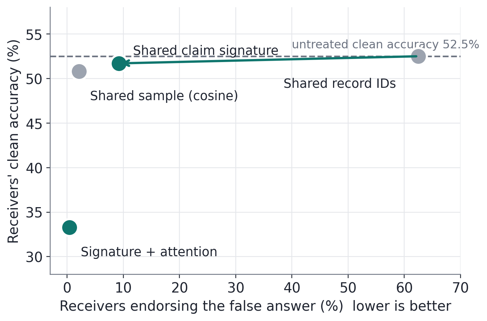
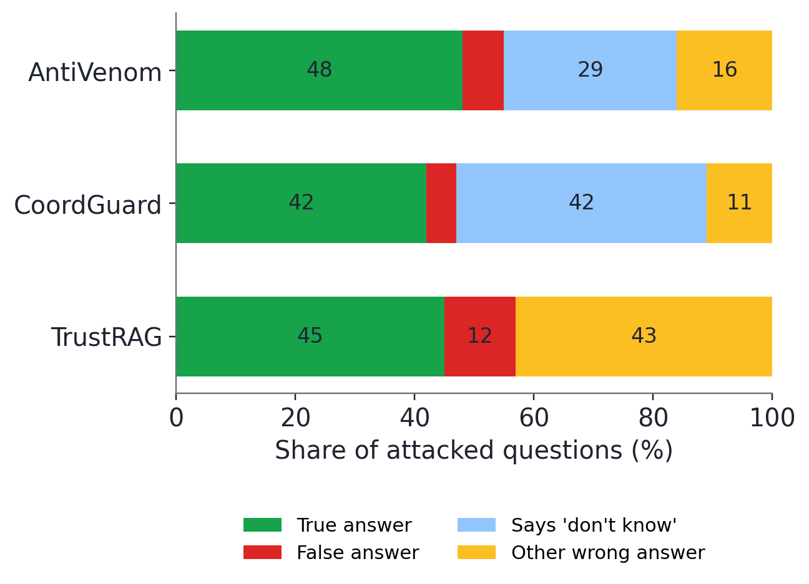
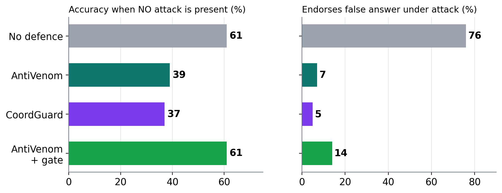
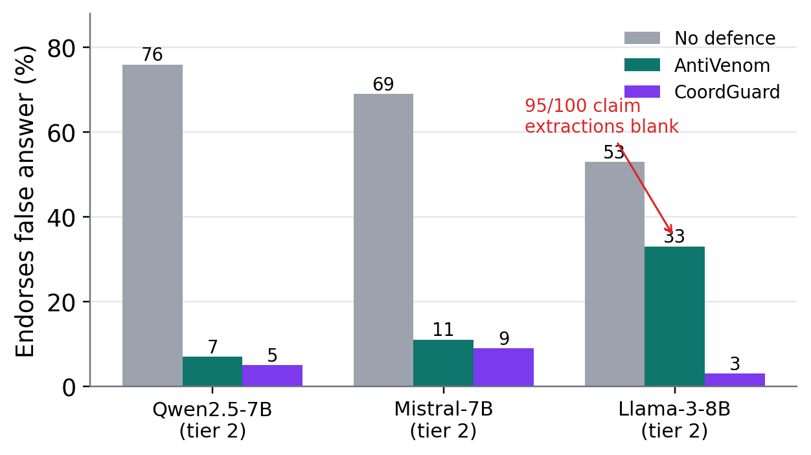
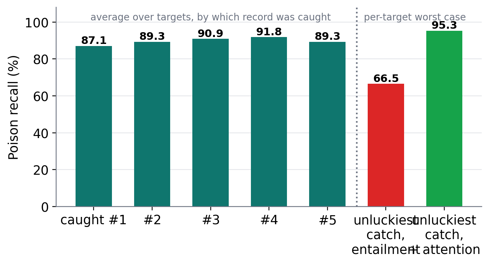
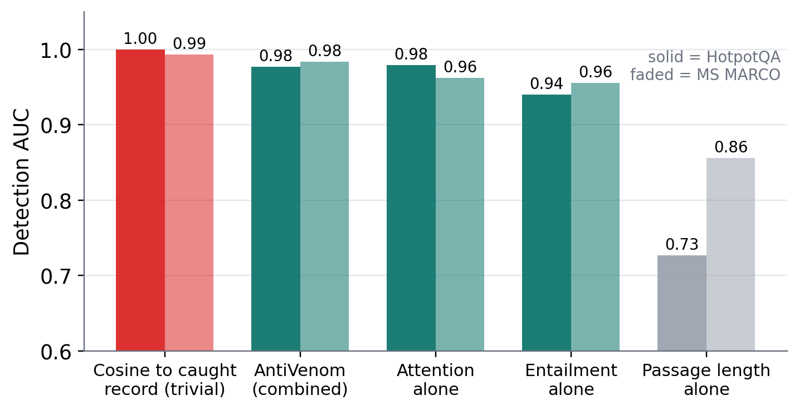
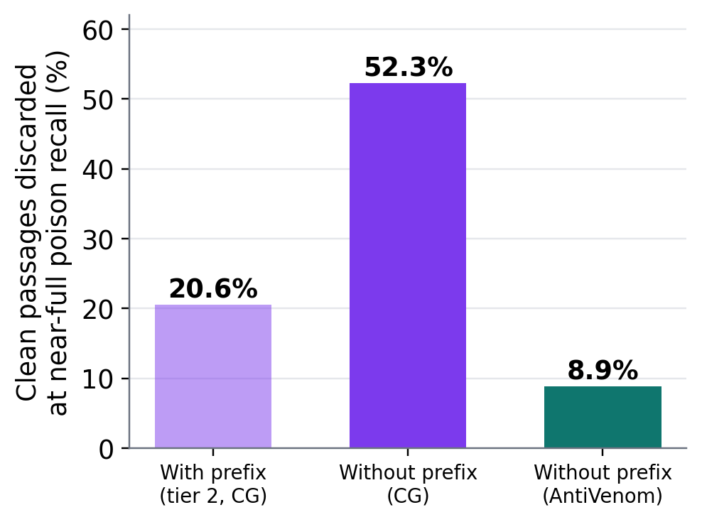

Nanyang Technological University (NTU), Singapore
Apart Research
Agents in a swarm read shared memory and retrieval, so a few planted records can mislead many agents at once. When one agent catches a poisoned record, what should it tell the others? Existing defences share nothing, or share identifiers and trust scores tied to particular records. We test whether one caught record can become a shareable claim signature: the question it targets and the false claim it pushes. Receivers remove passages that entail the claim, check the reader's own attention, and refill from next-ranked evidence. On a pre-registered test of 100 untouched PoisonedRAG questions, false-answer endorsement fell from 76% to 7%, matching CoordGuard and TrustRAG while discarding less good evidence (15% vs 21% of clean passages). In a swarm, receivers holding renamed copies were fooled 62% of the time when the finder shared identifiers and 9% when it shared the claim, with clean accuracy unchanged. [Sprint result: one sentence on gated sharing against SecureCollaRAG and MAPLE-Guard on fresh incidents.] Sharing the claim, not the identifier, is what lets one detection protect a swarm.
1 Research conducted at the Swarm Alignment Hackathon (Apart Research, with the AI Alignment Foundation and AE Studio), 6–8 November 2026. Track 4 (Multi-Agent Oversight and Control). The AntiVenom detector and the experiments in Sections 4.1–4.3 are pre-sprint work; Appendix A.2 lists exactly what was done before and during the sprint.
The inspiration: how antivenom works. A snakebite is dangerous because venom does not stay where it entered: it travels through the blood and acts wherever it lands. Antivenom is made from a small, captured sample of that venom. Animals are given tiny doses, their immune systems produce antibodies, and those antibodies are purified and given to patients. The antibodies do not need to know which snake bit, or where in the body the venom has gone. They recognise the toxin by its shape, bind it wherever it circulates, and neutralise it. Antivenom also has side effects, from allergic reactions to serum sickness, so clinicians give it only when signs of envenoming appear.
Why this fits poisoning in a swarm. Poison in an agent swarm behaves like venom. A planted record enters one shared store and then reaches every agent that retrieves it, often as copies stored under different identifiers. Today's defences resemble treating each patient from scratch, or circulating the name of the snake. Antivenom suggests a different design. Capture one sample, turn it into something that recognises the poison by what it says rather than where it is stored, distribute that to every agent, neutralise matching records wherever they appear, and treat only when there are signs of poisoning. Figure 1 shows how each step of antivenom maps onto the swarm.
A warning that only protects the agent who found it. Five planted passages tell a retrieval-augmented agent that the main industry of the Canadian Shield is fishing. Undefended, it answers "fishing" 76% of the time across our fresh test questions. Suppose one agent in a swarm catches one of those passages. If it shares the record's identifier, a second agent whose copy was stored under a different identifier is still fooled. If it shares what the record claims, the second agent can find and remove its own copy, whatever it is called and however it is worded.
Why it matters. In the Hugging Face agent incident, one agent ended up assigning work to hundreds of others, and about 1,200 agents used 7,905 names [1, 2]. When agents rename, copy and paraphrase, identifiers stop being a reliable way to say which records are dangerous. Track 4 asks what oversight and control still work when the untrusted side is many agents. Here the untrusted side is the shared store, and the control is the warning one agent can pass to the others.
Figure 1: From antivenom to AntiVenom. Top: how antivenom works. Middle: the design each step inspired. Bottom: a real development question (NQ test363) with and without AntiVenom (📕 planted record, 📗 clean record); values are those of Figure 3.
| Incident stage | Research question | Answer in brief | Where |
|---|---|---|---|
| Spread and warning | RQ1. Can one agent's catch protect the rest of the swarm? | Yes: sharing the claim cut fooled receivers from 62% (shared IDs) to 9%, clean accuracy unchanged | §4.1 |
| Defence in each agent | RQ2. Is each receiver's defence as strong as the best single-agent defences? | It matches CoordGuard and TrustRAG on blocking, discards less good evidence, runs faster, and fails by abstaining | §4.2 |
| Variation across the swarm | RQ3. Does it hold up as the poison varies from agent to agent? | It holds whichever copy is caught (95% worst case with attention) and without the benchmark's shortcuts | §4.3 |
| Normal operation | RQ4. What does protection cost when the swarm is not under attack? | Ungated, every defence loses about a quarter of clean accuracy; acting only when the claim is present restores it (exploratory) | §4.4 |
Table 1: Four questions that follow one swarm-poisoning incident from spread to recovery, and what we found.
Theory of change. No agent will catch every planted record. If one catch can become a warning that survives renaming and paraphrase, and if receivers act on it only when the claim is actually present, then every detection strengthens the whole swarm instead of being repeated in each agent. Our contributions are a defence that shares claims rather than identifiers (Section 3), a pre-registered comparison with the strongest single-agent defences (Section 4.2), and evidence on robustness and benign cost in a swarm setting (Sections 4.3–4.4).
Poisoning retrieval and memory. PoisonedRAG plants a few passages that make a reader give a chosen false answer [3]; we use its released poison and never generate attack text. Memory-poisoning attacks on agents such as AgentPoison and MINJA write similar records into agent memory [12].
Defending one agent. TrustRAG filters passages by clustering and self-assessment [4]. RobustRAG aggregates isolated answers [13]. CoordGuard removes the most coordinated cluster of passages [5]. "Ranking Is Not Deciding" shows that the question prefix PoisonedRAG adds to every poison is a detection shortcut, and sets a reporting protocol we follow [9].
Defending many agents. MAPLE-Guard gates memory writes, retrieval and promotion with per-item and per-agent trust [6]. PerMIT proves memory integrity and promotes entries once enough users endorse their exact bytes [7]. SecureCollaRAG scores documents with a trained graph network weighted by per-source reliability [14]. GRAD classifies an agent's execution graph [10]. AgentAntibody turns a confirmed prompt injection into an abstract "epitope" antibody and reuses it inside one agent; its ablation shows raw-text memory does not transfer [8]. "The Price of Safety" measures the benign cost of memory defences [11].
| Defence | Design: what it can do | Measured, one agent (fresh test) | Swarm | |||||||
|---|---|---|---|---|---|---|---|---|---|---|
| Protects other agents after one detection | Catches renamed or reworded copies | Keeps attacker text out of messages | No training or new infrastructure | Acts only when attacked | False-answer endorsement | Clean passages discarded | Clean discarded, one poison | Seconds per question | Receivers fooled | |
| AntiVenom (ours) | ● | ● | ● | ● | ●† | 7% | 15% | 3% | 18 s | 9% |
| CoordGuard [5] | ○ | – | – | ● | ○ | 5% | 21% | 72% | 25 s | – |
| TrustRAG [4] | ○ | – | – | ● | ○ | 12% | – | – | 36 s | – |
| Shared record IDs | ◐ | ○ | ● | ● | ● | – | – | – | – | 62% |
| Shared sample + cosine | ● | ◐ | ○ | ● | ● | – | – | – | 12 s | 2% |
| MAPLE-Guard [6] | ◐ | ◐ | ● | ○ | ○ | sprint | – | – | – | sprint |
| PerMIT [7] | ◐ | ○ | ● | ○ | ○ | – | – | – | – | – |
| SecureCollaRAG [14] | ◐ | ◐ | ● | ○ | ○ | sprint | – | – | – | sprint |
| AgentAntibody [8] | ○ | ● | ● | ● | ◐ | – | – | – | – | – |
Table 2: AntiVenom against existing defences. ● yes, ◐ partly, ○ no, – not applicable or not measured; "sprint" marks baselines measured in the sprint test. Design entries for MAPLE-Guard, PerMIT, SecureCollaRAG and AgentAntibody are read from their papers (Appendix D). †The claim gate is exploratory (Section 4.4). Measured columns use the same reader and contexts; one-poison values are development data.
A different question. Prior defences ask about the form of a passage or the trust of its source: is it unusually similar to its neighbours (TrustRAG, CoordGuard), or does it come from a reliable writer, source or endorsed byte string (MAPLE-Guard, SecureCollaRAG, PerMIT)? Each answer is computed per agent, and each can be dodged by rewording, renaming or a fresh source. AntiVenom asks about the attacker's goal: what is this poison trying to make agents believe? A planted record works only if it gets the reader to adopt one specific false answer, so every working copy must state that claim, whatever it is named and however it is worded. That one change of question reverses three assumptions the field has built on (Table 3).
| Prior focus | Underlying assumption | AntiVenom's reframe | What it revealed |
|---|---|---|---|
| Detect suspicious form: clusters, similarity, anomalies | Poison is recognised by how it looks | Recognise poison by what it claims | Clean evidence almost never states the false claim: 15% vs 21% clean cost, 3% vs 72% with one poison |
| Each agent defends itself; share IDs or trust scores | A detection is local, or tied to one record | A detection is a transferable antibody | Renamed copies are caught across the swarm: 9% fooled vs 62% with shared IDs |
| Filter every query; judge on attacked inputs | A defence is either on or off | The claim itself is the trigger | Every always-on defence costs about a quarter of clean accuracy; acting only on the claim restores it |
Table 3: Where AntiVenom departs from prior defences, and what each change revealed.
3.1 Threat model. An attacker plants k = 5 records (the released PoisonedRAG poison) in a store that agents retrieve from. Each record is written to make a reader give one chosen false answer to one question. One agent, the finder, holds one planted record (the "captured" record, poison[0]); capture is assumed, not detected. Receivers do not know which of their records are planted, and the attacker does not adapt to the defence. In the swarm study, each receiver's planted copies carry identifiers different from the finder's.
3.2 Study design. Questions were split before any outcome was examined, and every threshold and weight came from the calibration split only (Figure 2). The confirmatory protocol, primary claims and detector were frozen and hashed before the tier-2 questions were opened, and every arm ran on them exactly once.
Figure 2: Study design: what each question split was used for. Development and tier-1 results are labelled as such wherever they appear.
3.3 Variables. Table 4 lists what we varied, what we measured, and what was held fixed.
| Role | Variable | Levels / definition |
|---|---|---|
| Varied | Defence arm | no defence; AntiVenom; CoordGuard (always-filter, ± refill); TrustRAG; random and lowest-rank deletion (same count) |
| What the finder shares | nothing; record IDs; the raw caught record (cosine filter); claim signature (entailment); claim signature + attention | |
| Poisons in context | 1, 2, 3 (development); 5 released (main) | |
| Which copy is caught | each of the 5 released records in turn | |
| Shortcut prefix | with or without the question prefix PoisonedRAG adds to each poison | |
| Reader; gate | Qwen2.5-7B (main), Mistral-7B, Llama-3-8B; gate on or off | |
| Measured | Per answer | endorses the false answer; correct (gold answer, abstention counts as not correct) |
| Per passage / run | poison recall; clean passages discarded; receivers fooled; receivers' clean accuracy; seconds per question; message bytes | |
| Fixed | Pipeline | Contriever retrieval (matches released scores within 3×10−6); top-10 contexts; PoisonedRAG prompt; greedy decoding, 48 tokens; 4-bit MLX weights, unchanged |
Table 4: Experimental variables.
3.4 Detector specification. For each retrieved passage i, AntiVenom computes two signals and one score, using only the captured record and the receiver's own reader:
3.5 Swarm protocol, baselines and statistics. Swarm. In each of 80 development incidents, one finder publishes a message and three receivers, each with its own state and retrieved context, answer independently (240 receiver observations per arm; 480 untreated clean reference calls). Arms differ only in what is published: record IDs (64.5 bytes on average), the raw caught record (363 bytes) or the claim signature (275 bytes). The arm fixed in advance as focal was signature + attention; signature-only entailment was a pre-specified secondary arm. Baselines. CoordGuard is implemented from its paper (no code is released) with e5-large-v2 and τc = 1.0; TrustRAG is ported from released code; RobustRAG was excluded a priori after it underperformed on development data. Statistics. The unit is the question (or incident, averaging its receivers). We report exact McNemar tests, target-level bootstrap 95% intervals (B = 2,000) and Holm correction over each pre-registered family. Answers are rule-scored; a 302-row blind sheet for two human labellers is prepared.
3.6 What happens, on one real question. Figure 3 follows one signature (question “What is the main industry in the Canadian Shield?”, claim “not mining but rather fishing”) into one receiver's context. Four planted passages entail the claim. The fifth says it differently and slips past entailment, but the reader's attention fixes on it. No clean passage crosses either threshold, so all five planted passages are removed, five next-ranked passages fill the gaps, and the answer flips from "fishing" to "Mining is the main industry in the Canadian Shield."
Figure 3: One receiver's ten retrieved passages for NQ question test363 (development set; real stored values). Each tile is coloured by the strength of its signal.
| Measure | AntiVenom | Comparator | Role |
|---|---|---|---|
| False-answer endorsement, fresh pre-registered test (n = 100) | 7% [2–13] | No defence 76% [67–84] CoordGuard 5% [1–10] TrustRAG 12% [6–19] | Primary capability |
| Correct answer under attack (n = 100) | 53% [44–63] | CoordGuard 47% [37–57] TrustRAG 53% [43–63] | Utility under attack |
| Endorsement after deleting the same number of passages at random | — | 64% [54–73] | Negative control: gain comes from detection |
| Clean passages discarded at the deployed setting | 14.7% | CoordGuard 20.6% | Precision |
| Receivers fooled, swarm (80 incidents, 3 receivers each) | 9.2% [4.6–14.6] | Shared IDs 62.5% [53.8–70.8] Shared sample 2.1% | Swarm protection |
| Receivers' clean accuracy, swarm | 51.7% [43.3–60.0] | Untreated 52.5% [44.2–60.8] | Swarm benign cost |
| [Sprint] Gated sharing on fresh incidents vs SecureCollaRAG and MAPLE-Guard | [ ] | [ ] | Judged weekend result |
Table 5: Headline results with 95% target-level bootstrap intervals, and the controls that make them interpretable. Swarm rows use previously inspected development questions (pre-sprint).
In each of 80 incidents, one finder caught one planted record and three receivers held planted copies under other identifiers. We compared what the finder shares. With identifiers, 62.5% of receivers still endorsed the false answer, because their copies did not match. With the claim signature, 9.2% did, and receivers' clean accuracy stayed at 51.7% against 52.5% untreated (Figure 4). The difference over identifiers is 62 points (Holm p = 0.00025). Sharing the raw caught record with a cosine filter did as well as the claim (p = 0.50) but broadcasts the attacker's text. Adding attention without a gate blocked almost every attack and cut clean accuracy to 33%, which Section 4.4 explains.

Figure 4: What the finder shares, and what it does to receivers (80 incidents, three receivers each). Dashed line: untreated clean accuracy.
A swarm warning is only useful if each receiver can act on it well. On 100 questions nobody had looked at, AntiVenom blocked attacks as well as CoordGuard and TrustRAG: endorsement fell from 76% to 7%, against 5% and 12% (Figure 5); the differences do not survive correction. The protocol also pre-registered an earlier version of the detector as its primary arm; it blocked slightly less (12%), and neither pre-registered superiority claim over CoordGuard held (Appendix B). Random and lowest-rank deletion left most attacks in place, so the gain comes from detection.
Figure 5: Fresh pre-registered test (n = 100). AntiVenom's detector and thresholds were frozen and hashed before these questions were opened. Dashed line: accuracy on clean contexts with no attack.
At equal blocking, the defences differ in what they cost each agent (Figure 6). AntiVenom discarded 15% of clean passages against CoordGuard's 21% at the deployed setting, 3% against 72% when only one poison was present, and 9% against 52% without the question prefix. It took 18 s per question against 25 s and 36 s. When it failed, it more often abstained: 16% other wrong answers against TrustRAG's 43%. In a swarm these costs multiply by the number of agents, so they matter as much as blocking.



Figure 6: Left: clean passages discarded at the deployed setting (fresh test), with one poison, and without the question prefix (development). Middle: how each defence fails under attack (fresh test). Right: seconds per attacked question (timing audit).
Whichever copy is caught. In a swarm, the finder catches whatever copy it happens to see. Averaged over targets, recall was 87–92% whichever planted record was caught. Per target, the unluckiest catch dropped entailment recall to 67%, below 50% for 24 of 80 targets. With the reader's attention added, worst-case recall was 95% and no target fell below 50% (Figure C2). The specific signal depends on the caught copy; the general one does not.
Without the benchmark's shortcuts. PoisonedRAG makes two things easy. The planted records for one question are near-copies, so deleting anything similar to the caught record reaches AUC 1.00 on HotpotQA and 0.99 on MS MARCO (Figure C3, left). And every record begins with the question, which detectors can exploit [9]. Without that prefix, CoordGuard needed to discard 52% of clean passages; AntiVenom discarded 9% at the same recall, and its AUC stayed at 0.98 (Figure C3, right). Real swarm poison will be more varied than near-copies, so this benchmark's detection scores are upper bounds.
Most of the time, nothing is wrong. Run on unattacked contexts, every defence we tested, CoordGuard included, cut accuracy from 61% to 35–39% (Figure 7). For AntiVenom the cause is the attention rule, which always flags at least one passage. Following antivenom's rule of treating only on signs of envenoming, we let a receiver act only when some passage entails the shared claim. This restored 61% on unattacked contexts, while endorsement under attack rose from 7% to 14%. The gate was designed after the fresh test, so it is exploratory; the sprint test evaluates it on fresh incidents in the swarm.

Figure 7: The cost of leaving a defence on, and the claim gate (fresh test, n = 100; gate exploratory).
5.1 Why AntiVenom works. The core reason is simple: a poison has to say its false claim to work, and saying it is exactly what AntiVenom detects. Five mechanisms follow from that (Figure 8).
Figure 8: Why the mechanism works. Each card names a property of poisoning that AntiVenom exploits.
5.2 What this means for swarms. Share meaning, not identity: identifiers fail exactly where swarms differ from single agents. Parity is not the end of the comparison: defences that block equally still differ in what they destroy, cost and how they fail. Defences need a trigger: every defence we tested damaged clean answers when no attack was present.
5.3 Limitations. Rule-scored answers with human labels pending; one main reader (Mistral transfers; Llama's claim extraction failed, Appendix C); most swarm and robustness results on development questions; a non-adaptive attacker and one benchmark of near-duplicate poisons; serial, homogeneous agents rather than autonomous contagion. Appendix A gives the full list.
Poison in a swarm spreads like venom: one planted claim reaches every agent that reads the shared store, under whatever name it was saved. Defences built for one agent make every agent rediscover it alone, and warnings built on identifiers miss every renamed copy. Where prior defences asked whether a passage looks suspicious or a source is trusted, AntiVenom asks what the poison is trying to make agents believe, the one thing an attacker cannot drop. It takes the lesson of antivenom: capture one sample, recognise the poison by what it says, and send that recognition everywhere. One caught record becomes a 250-byte claim that cut fooled receivers from 62% to 9% with no measurable loss of clean accuracy. In each agent, it matches the state of the art on blocking, 7% against CoordGuard's 5% and TrustRAG's 12% on a pre-registered fresh test, while discarding less good evidence, running faster, needing no training, and abstaining where TrustRAG invents wrong answers. It holds whichever copy is caught and without the benchmark's shortcuts, where CoordGuard does not. And because it carries the claim it is looking for, AntiVenom can stay silent until that claim appears, which neither CoordGuard nor TrustRAG can do. For anyone running agents on shared memory, the design rule is simple: when one agent finds poison, share what it says, and act only where it is said.
This work is supported and funded by the Pathfinder Fellowship, a program run by Kairos. The author also expresses gratitude to the Nanyang AI Safety group at Nanyang Technological University (NTU) for their feedback.
Code, frozen protocols (docs/PREREG_CONFIRMATORY.md with hashes; docs/V2_DETECTOR_FROZEN.md; docs/WEEKEND_SWARM_PROTOCOL.md), run records and analysis scripts are in the project repository [link to add]. External data and model weights are not redistributed; PoisonedRAG poison is the authors' release.
Pre-sprint (built before 6 November 2026, unpublished, marked preexisting in the README): the AntiVenom detector and code; single-agent experiments and analyses; the pre-registered confirmatory test (Section 4.1); the swarm comparison and robustness analyses (Sections 4.2–4.3); the gate analysis. Sprint (6–8 November): [list — the frozen weekend protocol, SecureCollaRAG and MAPLE-Guard ports, the gated swarm run on fresh incidents, blind human scoring, this report and slides].
The work is defence-only. All poison comes from the published PoisonedRAG release; no attack content was generated. Describing which poisons escape detection could help attackers, so we report aggregate patterns only. Shared signatures could be forged to make agents delete legitimate evidence; deployments should authenticate signatures and gate their use.
Adaptive attackers who paraphrase away from the claim; diverse-poison benchmarks; heterogeneous readers; authenticated signature exchange; the claim gate confirmed on fresh data; a principal-only alert channel.
| Element | Deployment situation | What it lets us test |
|---|---|---|
| Planted near-copies in a shared store | Poisoned documents or memories reachable by many agents | Whether one detection can protect others |
| Copies under different identifiers | Agents rename, copy and re-store records | Whether identifier-based warnings fail |
| One captured record | An alert, audit or user report surfaces one item | How much a single catch is worth |
| Unattacked contexts | Most traffic is benign | The cost of leaving a defence on |
Table B1: Each element and the deployment situation it models.
Pre-registered primary arm. The protocol froze an earlier version of the detector (entailment OR attention, without slot correction or the yes/no rewrite) as its primary arm, and the version reported here beside it, both before the fresh questions were opened. On the fresh test the earlier version reached 12% endorsement and 54% accuracy; neither pre-registered superiority claim over CoordGuard held (clean cost at matched recall, Holm p = 0.50; accuracy on unattacked contexts, 35% vs 37%, p = 0.73). All other numbers in this report use the version described here.
Hyperparameters: NLI model cross-encoder/nli-deberta-v3-base, threshold 0.01; attention at layer 21 (Qwen), last 8 prompt rows, head mean, per-token mass, z ≥ 0 within context, slot offsets fitted on clean NQ 1–20 contexts; avidity score = logistic regression on [logit entailment, debiased z] (coefficients 0.938, 2.347; intercept 4.974; threshold 0.0989 for 5% clean removal on calibration); gate threshold 0.975 (largest value firing on every attacked calibration context, excluding the captured passage). Prompts are reproduced verbatim in the repository.

On Mistral-7B, endorsement fell from 69% to 11% (CoordGuard 9%, TrustRAG 7%). On Llama-3-8B, 95 of 100 claim extractions were blank, so that run does not test the signature; endorsement fell only to 32%. Slot-position correction halved the attention signal's sensitivity to passage order (recall range across four orders 0.155 → 0.082). Removing the question prefix left our detector's AUC at 0.98 (0.99 with it).
Figure C1: Endorsement by reader on the fresh test.

Figure C2: Detection by which planted record was caught (development, n = 80).


Figure C3: Left: passage-level detection AUC on tier-1 confirmatory data (post hoc). Right: clean cost at near-full recall with and without the question prefix.
Code availability: MAPLE-Guard and SecureCollaRAG release code; PerMIT on request; GRAD via a supplementary archive; AgentAntibody not checked. Only SecureCollaRAG uses our benchmark; it reports 12–21% attack success on NQ and HotpotQA under PoisonedRAG with other readers and settings, so its numbers are not comparable to ours. Track 4 mapping. Research question: does oversight still work when the untrusted side is many agents? Our answer for shared memory: a detection becomes a control for the whole swarm when the finder shares the claim and receivers act only when it is present.
Every number in this report is read from a results file listed in the repository's evidence index; figures are regenerated by paper/deck/make_figs.py and paper/report/make_report_figs.py. A code-level audit rechecked 1,300 confirmatory answers with zero rescoring mismatches; this verifies the rules' implementation, not their agreement with humans.
LLM coding assistants were used to write experiment and analysis code, run analyses, draft text and produce figures. All results come from logged runs; the author is responsible for every claim.